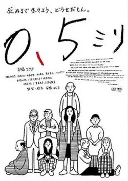

0.5 mm
| 0.5 mm | |
|---|---|
 Poster | |
| 0.5ミリ | |
| Directed by | Momoko Andō |
| Screenplay by | Momoko Andō |
| Based on | 0.5 mm by Momoko Andō |
| Cinematography | Takahiro Haibara |
Release date |
|
Running time | 3 hours 18 minutes |
| Country | Japan |
| Language | Japanese |
0.5 mm (0.5ミリ) is a 2014 Japanese drama film written and directed by Japanese novelist and filmmaker Momoko Ando. It was released in Japan on November 8, 2014.[1]
Cast
- Sakura Ando as Sawa Yamagishi
- Akira Emoto as Takeshi Sasaki
- Toshio Sakata as Shigeru
- Mitsuko Kusabue as Shizue Makabe
- Masahiko Tsugawa as Yoshio Makabe
- Kazue Tsunogae as Hamada
- Miyoko Asada as Hisako
- Junkichi Orimoto as Shozo Kataoka
- Midori Kiuchi as Yukiko Kataoka
- Nozomi Tsuchiya as Makoto Kataoka
- Tatsuo Inoue as Yasuo
- Masahiro Higashide as Karaoke clerk
Reception
Critical response
Maggie Lee of Variety called the film "a work of both cool precision and endearing eccentricity".[2]
Accolades
At the 36th Yokohama Film Festival, the film was chosen as the 3rd best Japanese film of the year[3] and Momoko Andō won the award for Best Director.[4]
At the 39th Hochi Film Awards, the film won the award for Best Picture and Masahiko Tsugawa won the award for Best Supporting Actor.[5]
At the 69th Mainichi Film Awards, Momoko Andō won the award for Best Screenplay and Sakura Ando won the award for Best Actress.[6]
References
- ^ 0.5ミリ(2013). allcinema (in Japanese). Stingray. Archived from the original on September 26, 2015. Retrieved June 15, 2015.
- ^ Maggie Lee (June 9, 2015). "Film Review: '0.5 mm'". variety.com. Archived from the original on June 10, 2015. Retrieved June 15, 2015.
- ^ "2014年日本映画ベストテン" 2014年日本映画ベストテン. homepage3.nifty.com/yokohama-eigasai (in Japanese). Archived from the original on 2015-06-24. Retrieved June 15, 2015.
- ^ "第36回ヨコハマ映画祭 2014年日本映画個人賞" 2014年日本映画個人賞. homepage3.nifty.com/yokohama-eigasai (in Japanese). Archived from the original on 2015-09-26. Retrieved June 15, 2015.
- ^ 第39回報知映画賞受賞一覧. hochi.co.jp (in Japanese). Archived from the original on December 4, 2014. Retrieved June 15, 2015.
- ^ "69th (2014年)". mainichi.jp (in Japanese). Archived from the original on January 21, 2015. Retrieved June 15, 2015.
External links
- Official website (in Japanese)
- 0.5 mm at IMDb